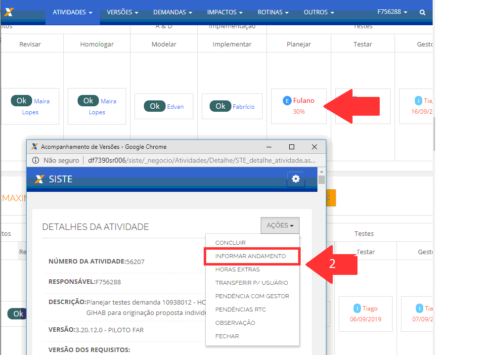

Sugestão:

Atendimento de demandas
Sugestão:
Dica:
As listas de situação estão com a guia “casos de teste” descontinuadas, os casos de teste estão sendo escritos na “suíte do caso de uso” ou seja ao pesquisar pela Estratégia de teste do SIOPI “276” conforme a imagem teremos um ponto de partida para nos basear ao criar novos planejamentos na prática é assim:
